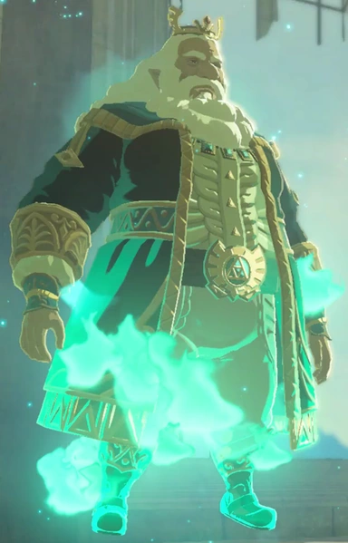
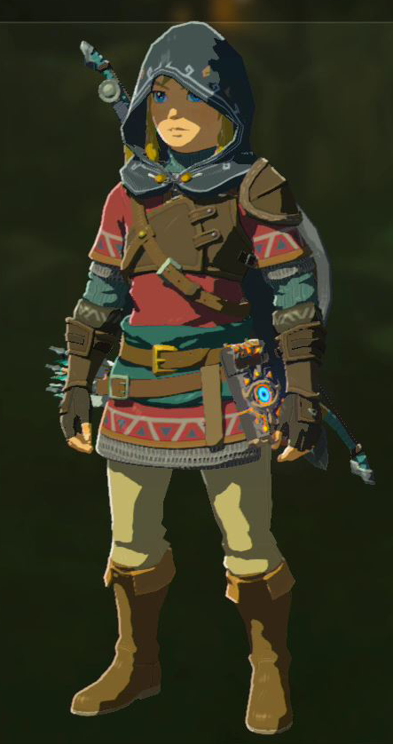
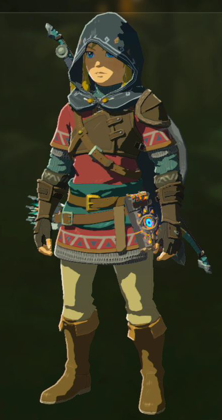
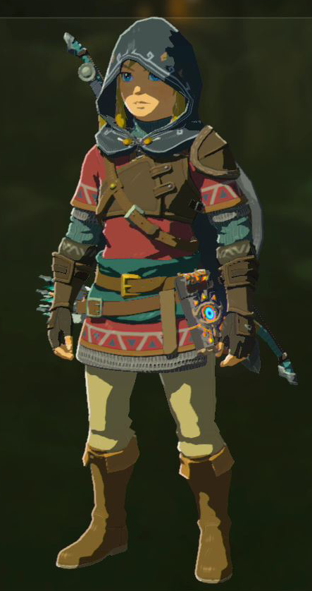

Le peuple Hylien
Les Hyliens sont le peuple humain principal du royaume d'Hyrule. C'est la race à laquelle appartient Link et la princesse Zelda. Ils sont facilement reconnaissables par leurs oreilles pointues et leur connexion spirituelle avec la déesse Hylia, qui est considérée comme la protectrice d’Hyrule. Dans Breath of the Wild, les Hyliens habitent principalement dans les villages, comme le village de Kakariko ou la capitale d'Hyrule, autrefois un lieu majestueux avant la calamité de Ganon. Ce peuple est traditionnellement connu pour son rôle central dans les événements de la saga Zelda et sa forte capacité à manier la magie et les artefacts divins.
Caractéristiques des Hyliens :
- Oreilles pointues
- Grande sagesse
- Capacité à utiliser la magie
- Héritage royal
Personnages Hyliens :


 

